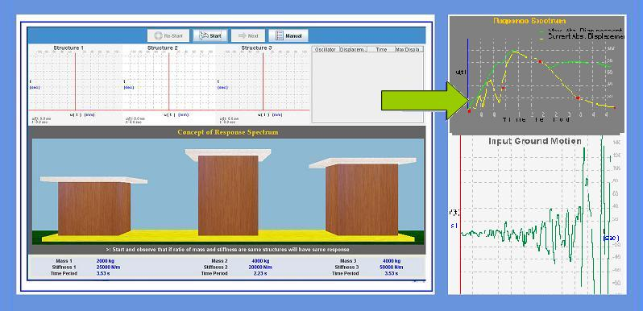
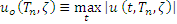
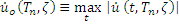
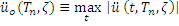
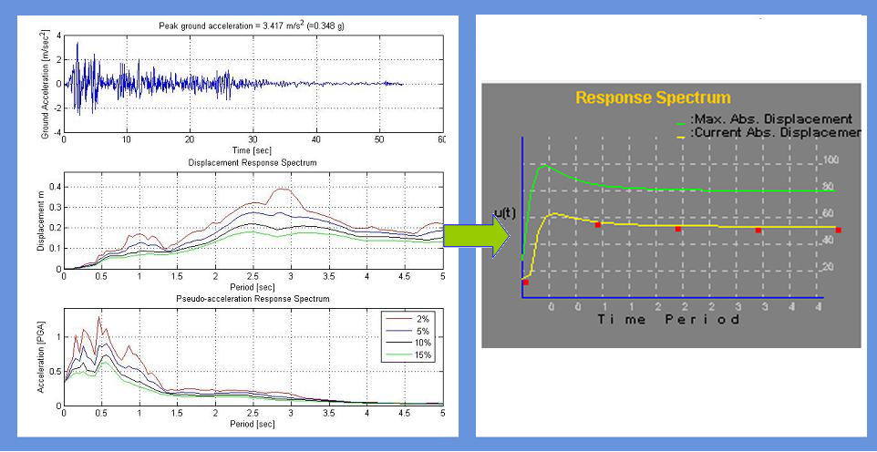

Response spectrum is one of the useful tools of earthquake engineering for analyzing the performance of structures especially in earthquakes, since many systems behave as single degree of freedom systems. Thus, if you can find out the natural frequency of the structure, then the peak response of the building can be estimated by reading the value from the ground response spectrum for the appropriate frequency. In most building codes in seismic regions, this value forms the basis for calculating the forces that a structure must be designed to resist (seismic analysis).
A response spectrum is a plot of the maximum response amplitude (displacement, velocity or acceleration) versus time period of many linear single degree of freedom oscillators to a give component of ground motion. The resulting plot can be used to select the response of any linear SDOF oscillator, given its natural frequency of oscillation. One such use is in assessing the peak response of buildings to earthquakes.


A plot of the peak value of a response quantity as a function of the natural vibration period of the system, or a related parameter such as circular frequency or cyclic frequency is called the response spectrum for that quantity.
A variety of response spectra can be defined depending on the response quantity that is plotted. Consider the following peak responses:




To understand the concept of response spectrum and to construct the same for a given component of ground motion



Observation 1: Concept of response spectrum
There are 3 buildings shown on the screen. User can select mass and stiffness of all 3 buildings. However, user need to make sure that at least two buildings time period is same.
Select the earthquake ground motion record and also damping.
Run the experiment.
You will observe after completing that the maximum displacement of the oscillators with same time period is same irrespective of their different masses and stiffnesses.
Go to Manual view on Concept of Response Spectrum(Click here)

Q1.
Response spectrum is the plot between time period and maximum displacement of building to a given ground motion.
True
False
Q2.
Time period controls maximum response.
True
False
Q3.
Buildings of different size, shapes will always have different time periods.
True
False
Q4.
Spectrum values are independent of damping.
True
False
Q5.
Response spectrum is very useful for structural engineers in design.
True
False

Procedure for the experiment is as follows.

- J. Penzien and M. Watabe, "Characteristics of 3-D Earthquake Ground Motions," Earthquake Engineering and Structural Dynamics, Vol. 3, pp. 365-373, 1975.
- E. L. Wilson, A. Der Kiureghian and E. R. Bayo, "A Replacement for the SRSS Method in Seismic Analysis," Earthquake Engineering and Structural Dynamics, Vol. 9, pp. l87-l92, 1981.
- “Dynamics of structures” by Anil K chopra C. Menun and A. Der Kiureghian, “A Replacement for the 30 % Rule for Muticomponent Excitation”, Earthquake Spectra, Vol. 13, Number 1, February 1998.